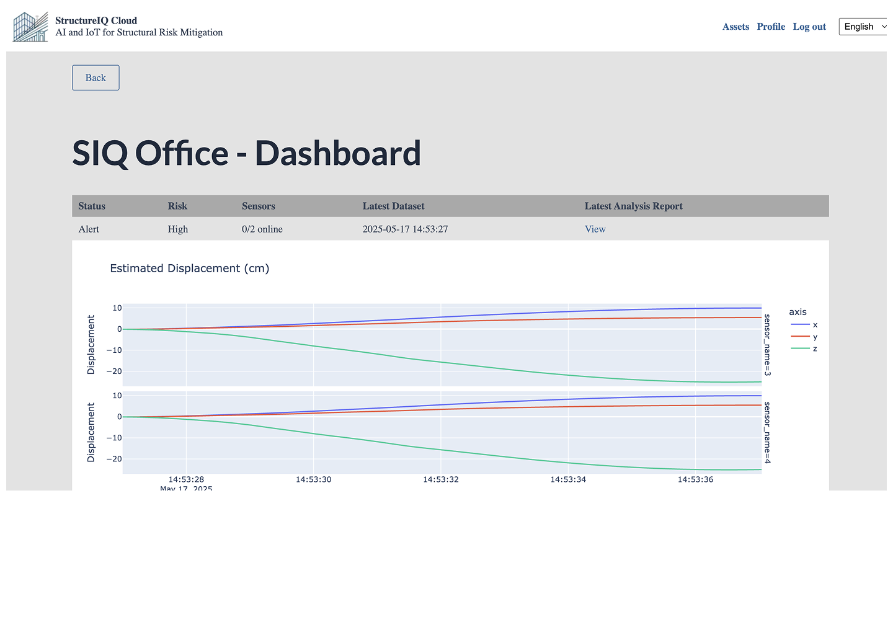
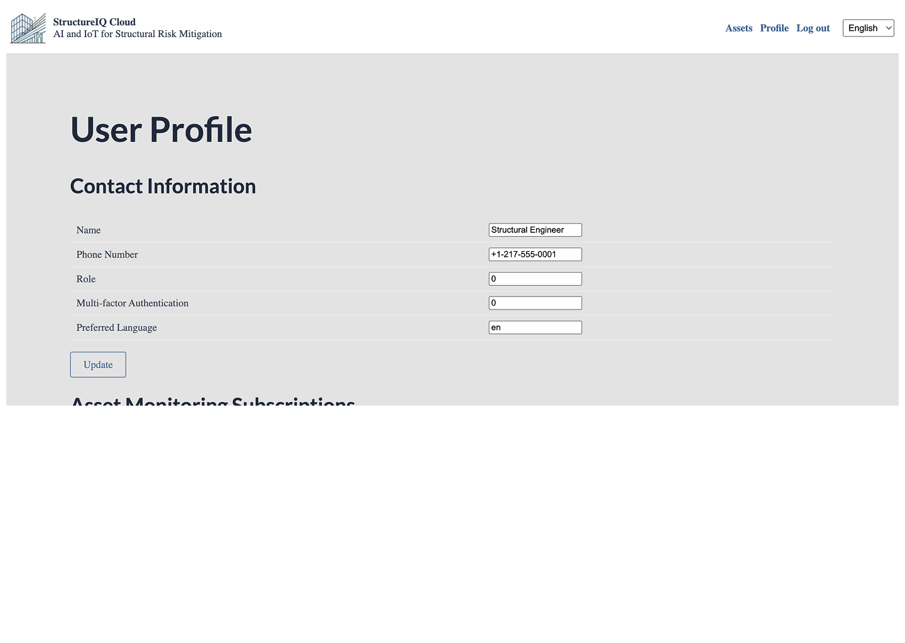
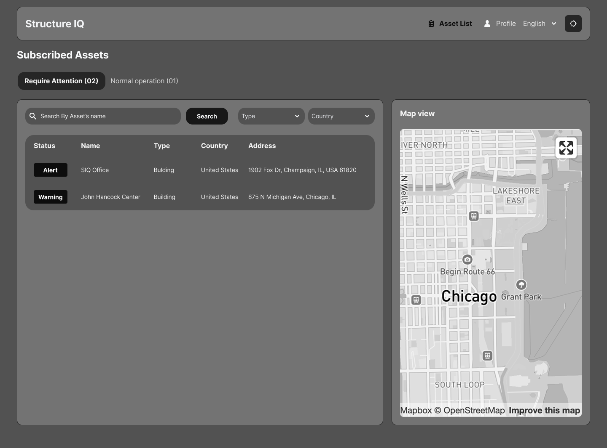
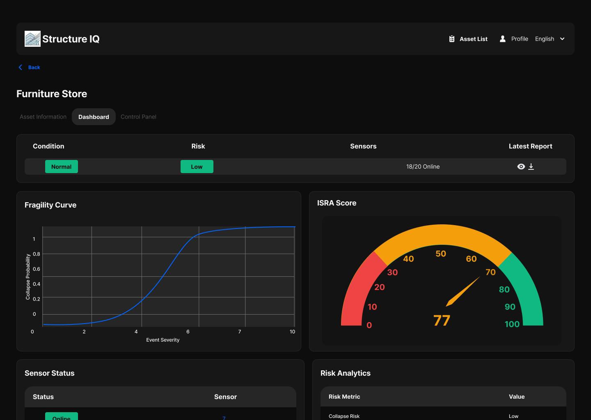
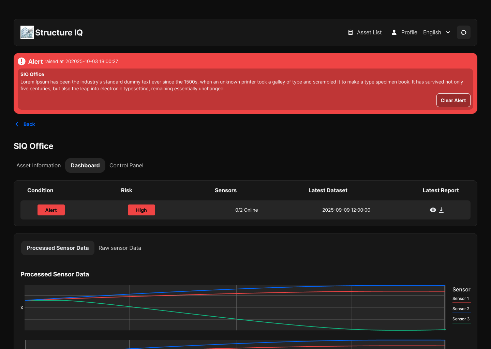
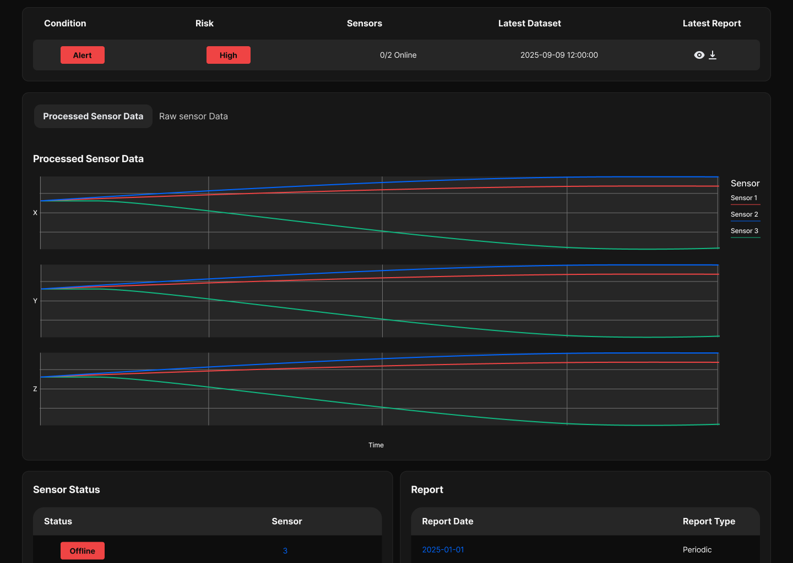
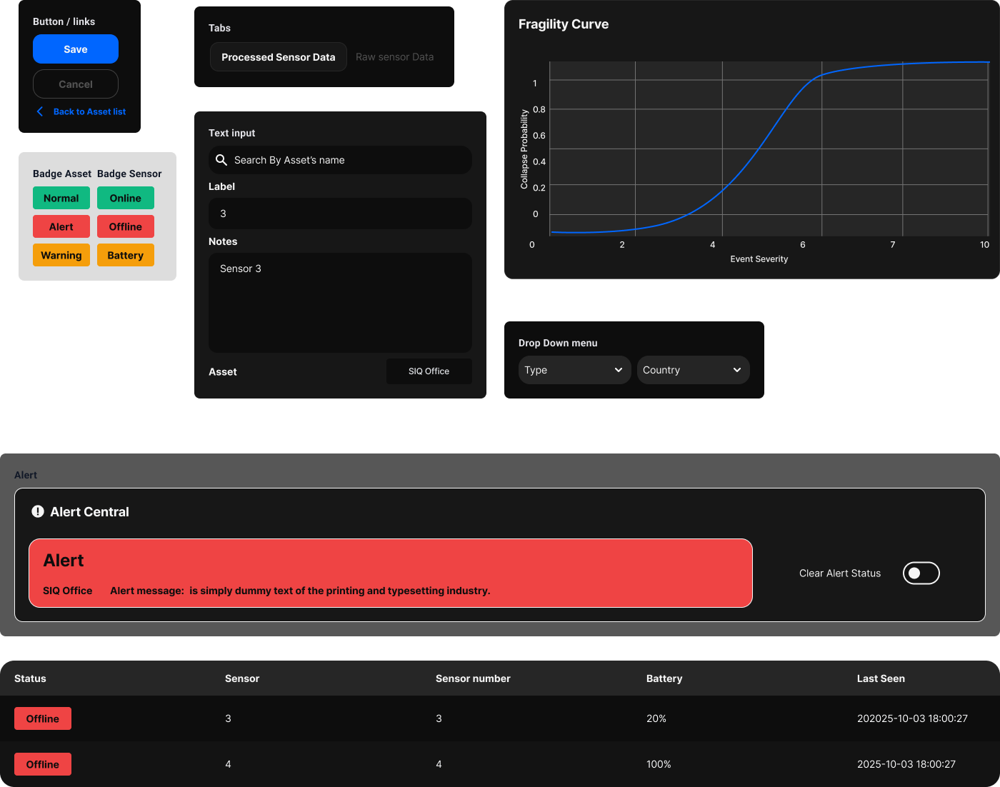
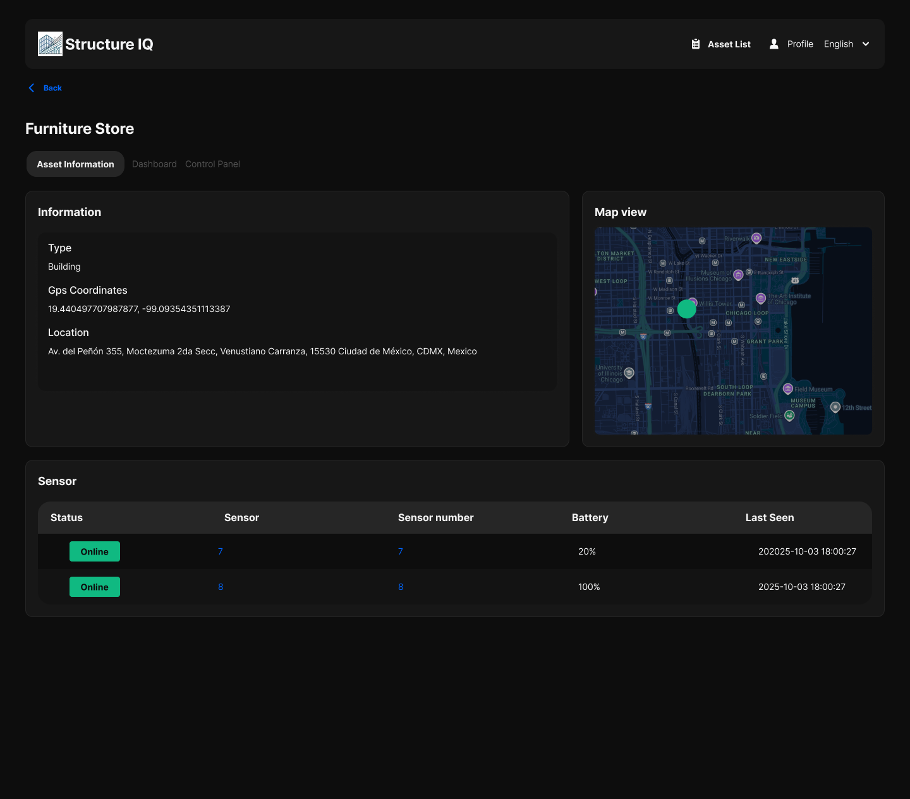
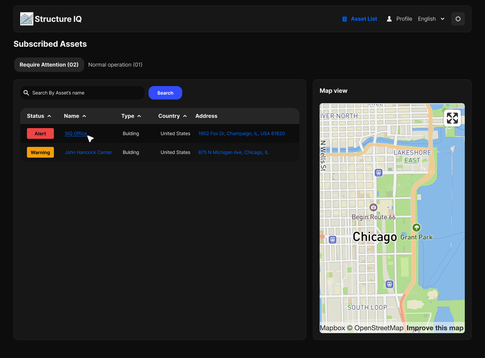

Structure IQ

Structure IQ is a SaaS platform that enables engineering specialists to monitor the structural integrity of bridges, buildings, and critical infrastructure using satellite-derived data. Bytenana was brought in to take their technical demo and turn it into a production-ready web app — connecting real data, rebuilding the interface, and delivering three distinct user experiences from the ground up.
The Problem
StructureIQ had a working demo but not a product. The existing interface ran on hardcoded data — built to prove a concept visually, not to connect to real infrastructure. Two problems needed solving at once: wiring the interface to their actual database, and redesigning the experience entirely. None of the data was organized in a way that let a specialist act on it quickly. The task was to assess everything that mattered, define the information hierarchy, and rebuild around three very different types of users.


Early Explorations
Before touching screens, I read the briefing and worked directly with the StructureIQ team to map what mattered most. The key question wasn't visual — it was structural: what does a general administrator need to see versus an engineer on-site versus a client checking status? Initial drawings were prepared and submitted for client approval, establishing the information hierarchy and user flows before any development began. Getting sign-off at this stage gave the dev team a clear target and kept scope from shifting mid-build.

Design Work
The platform required three distinct interfaces — General Administrator, Client, and Engineer — each with different data access levels and decision-making needs. The design challenge was organizing dense technical data (gauges, maps, charts, sensor lists) into surfaces that felt fast and unambiguous. The central problem was the alert system: sensor health monitoring had to surface structural anomalies anywhere in the application the moment they were triggered. We designed and tested multiple alert models with the engineers who would actually use the product, landing on a solution that was immediate without being disruptive to the workflow.


Design System
Three user types, one coherent product. Building the General Administrator, Client, and Engineer interfaces in parallel meant consistency wasn't optional — any drift between surfaces would create confusion for users who crossed between them. I built a modular design system covering the full range of the platform: data visualization components (gauges, charts, maps), alert and sensor status states, navigation patterns, and table layouts. The dev team built from this system in parallel, which eliminated back-and-forth and kept handoff time low.


Results
From a proof-of-concept demo to a production-ready platform. The StructureIQ team highlighted the speed of delivery and the quality of communication throughout — direct client engagement, clear deliverables, and zero ambiguity at handoff.

